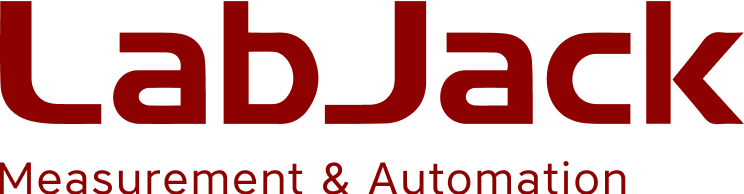
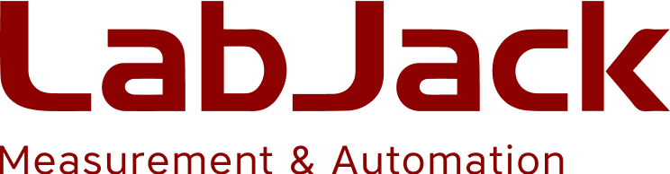

The dedicated students in our organization are the driving force behind everything we do and accomplish. At over 60 members strong, Sun Devil Rocketry is proud to have a diverse and wide-reaching membership. Meet some of our members and see what you can accomplish as a member of SDR!

Sun Devil Rocketry (SDR), formerly Daedalus Astronautics, is an organization within Arizona State University’s Ira A. Fulton Schools on Engineering. The structure of the club is multifaceted and deeply rooted in research and development of rocketry technologies, as well as community involvement and professional strengthening of its members. It is comprised of three research teams, two introduction teams, and an outreach initiative.
Mainstream propulsion technology is categorized into three groups describing the state of matter of a rocket’s fuel and oxidizer: Solid, Hybrid, and Liquid. Each research team specializes in one propulsion system and focuses on conducting innovative projects in that area. SDR believes that rocketry should be accessible to everybody, even with no prior experience. The Introduction Teams are designed to instruct new members from modeling a rocket digitally all the way to launching it in the desert. SDR has long-standing relations with local elementary schools. Throughout the year, club members visit classrooms to teach the basics of rocketry and walk students through building their own rocket.

 



Sun Devil Rocketry's team of student leaders help propel our organization to new heights!
Bria is a senior in Aerospace Engineering and the President of Sun Devil Rocketry. As President, she is responsible for ensuring the club is running smoothly and achieving its goals. In her spare time, she enjoys martial arts, playing the alto saxophone, baking, and rock climbing.
Aron is a senior in Aerospace Engineering and the Vice President of Sun Devil Rocketry, as well as the Liquids Research lead. He is responsible for assisting the President and serving as a technical advisor for the team leads. Aron is also currently helping to develop a new liquid engine that would support the club's goals of a liquid rocket in the future. Outside of Engineering, he enjoys mountain biking, playing the piano, and reading.
Krushna is currently an aerospace engineering sophomore and first entered the world of high power rocketry in his freshman year, and quickly fell in love. Serving as Treasurer, he is in charge of keeping the clubs finances in check and managing the placement of orders. He also acts as the Co-Lead of the Advanced High Power Rocketry team, helping lead the design, manufacturing, and launch of some of the club's most ambitious and high-performant projects. On the rare occasion he goes outside, Krushna loves to hike, have some nice food, and spend a little too much on travel.
Marzuk is the safety officer this year for SDR, making sure people have access to the PSYN shop and the workspace remains clean. He has past experience as treasurer, intro team lead, and AHPR lead. In his free time he enjoys hanging out with friends, reading, and machining.
Allison is a 3rd year electrical engineering student at ASU with minors in math and physics. Using her hobbies of photography, videography, and video editing, Allison creates engaging content that captures the progess and achievements of Sun Devil Rocketry. She works on projects that fuel her passion for aerospace and embedded systems. Outside of school, Allison loves to go on walks and read. She also has three cats.
Thomas is a 4th year in mechanical engineering at ASU. At SDR, he has been involved since his first year, working on projects ranging from supersonic solid-fuel rockets to liquid propulsion testing and development, both in the club and with personal projects. This year, Thomas will be serving as a solid propulsion team co-lead, as well as a liquids test operations co-lead. In past years, Thomas started the solid-fuel propulsion team at ASU, co-founded advanced high power rocketry, and led outreach and intro team programs. When not doing rockets or school, Thomas enjoys drinking unhealthy amounts of coffee, hugging trees, and spending time outside in the desert.
Nate Young is entering his final year of Aerospace Engineering. As Liquid Propulsion Lead, he oversees the design, analysis, and manufacturing of our clubs liquid fuel engine. He also co-leads the club’s Solid Propulsion team alongside Thomas, where they are developing and improving our clubs experimental solid rocket propellants and manufacturing large, high-impulse motors. Nate is very active in every discipline of the liquids team, contributing his knowledge of propulsion, computational and analytical techniques, and fluid systems towards the creation of our clubs liquid powered flight vehicle. Outside of the club he enjoys bouldering, hiking, listening to music, and making his CFD codes run faster.
Jamison Cabral is a junior studying mechanical engineering. Since joining Sun Devil Rocketry in his freshman year, he has become a Test Operations Sub-Lead on the Liquids team, helping drive the development of ASU’s first liquid bipropellant rocket. He loves valves and pressure! Outside of rocketry, he loves to play sand volleyball and music.
Michael Sullivan is a junior in Mechanical Engineering and has been with SDR since freshman year. He is a lead for Advanced High Powered Rocketry (AHPR) for 2025-2026. On this team, he guides the clubs efforts to build increasingly complex and ambitious high powered rockets from scratch.
Nick is a senior majoring in Computer Systems Engineering. As the avionics lead, he is responsible for directing avionics teams in charge of developing, verifying, integrating, and delivering software and hardware towards Sun Devil Rocketry's interests. Nick is also a team founder and lead for the software application sub-team and a liquid avionics lead where he engaged in the development and hands-on testing himself. In his free time, Nick loves reading books, playing games, or simply just hanging out.
Eli is a junior studying Computer Science with a concentration in Software Engineering and Mathematics. His avionics firmware team is responsible for developing embedded applications and drivers for the Sun Devil Rocketry Flight Computer. He has a particular interest in formal software development processes, especially for safety-critical embedded systems. This year, he'll be re-designing the flight computer's firmware architecture to support the use of a real time operating system onboard. Eli uses his free time to mountain bike and play music.
David is currently a sophomore studying Electrical Engineering. As the avionics hardware lead, he ensures functionality of current flight technology and leads the development of new technology to further the club’s interests. He also helps run teaching programs for new members to the avionics group to learn about hardware. Outside of rocketry, he loves hiking and backpacking all around Arizona.
Thoi is currently a junior majoring in mechanical engineering. As the Intro Team Lead, he is responsible for mentoring new members interested in rocketry teaching them the fundamentals, assisting with rocket design, and guiding them through the building process. He also serves as a Sub-Social Media Officer, helping manage the team’s LinkedIn and Instagram pages. Outside of rocketry, Thoi enjoys gaming, hiking, exploring new places, trying new foods, and occasionally capturing scenic photography on his phone.
Nik is a sophomore studying Aerospace Engineering, along with a minor in educational studies. They currently serve as an Intro Team lead, guiding newcomers in rocketry projects. Their academic interests surround aerodynamics and hydrodynamics. Outside of SDR, Nik plays bass guitar, reads historical science fiction, and goes on frequent road trips!
Avi is an honors student studying Mechanical Engineering with a passion for rocketry, robotics, and all things space. Joining SDR has been one of the most exciting parts of his college journey and it's where he gets to turn ideas into real systems, learn from other driven students, and contribute to something bigger than himself. He is always curious, always building, and always looking toward the next launch.
Nothing we do would be possible without the support of our donors, corporate sponsors, and talented membership. Be part of the future of aerospace, and support Sun Devil Rocketry today!